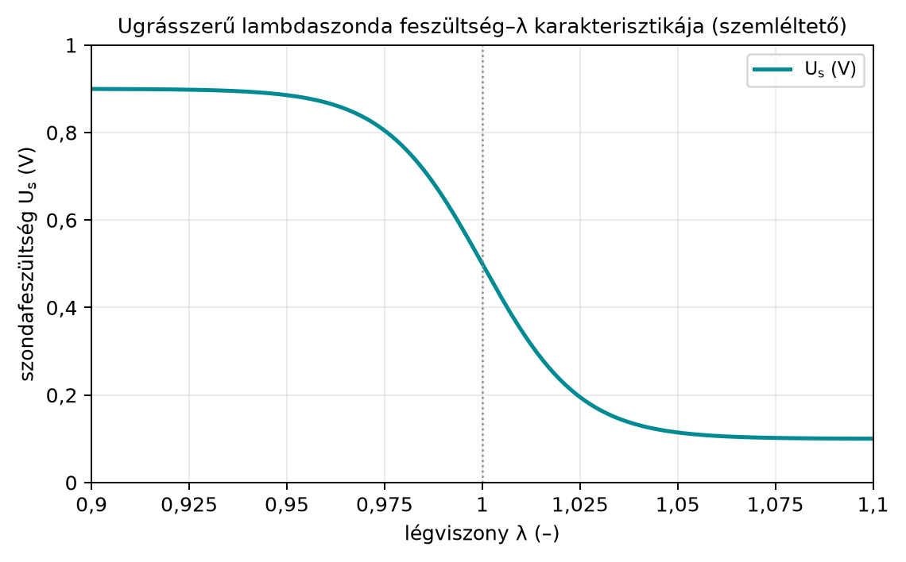
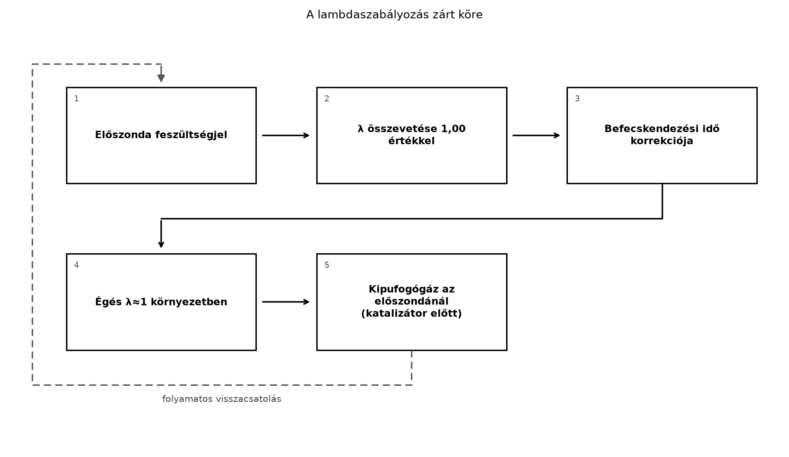

Egy benzinmotoros autó motorja alapjáraton, terhelés alatt és gyorsításkor is folyamatosan változtatja a levegő/üzemanyag keverékét. A kipufogógázban lévő három szennyező anyag, a szén-monoxid (CO), az elégetlen szénhidrogének (HC) és a nitrogén-oxidok (NOx) csak akkor alakíthatók át nagy hatásfokkal egyetlen katalitikus reaktorban, ha az égés a sztöchiometrikus keverék közelében zajlik. Az autószerelő műhelyben leggyakrabban ilyen panasszal találkozunk: a motor visszaellenőrizhetetlen hibakódot tárol a lambdaszonda fűtőköréről, a katalizátor hatásfokáról, vagy a kipufogógáz-szonda lassú jelváltásáról. Ilyenkor nem elég az érzékelőt cserélni: meg kell érteni a háromutas katalizátor, a lambdaszonda és a motorvezérlő együttműködését.
Képzeljünk el egy kibontott katalizátort, amely méhsejtszerű, sok kis csatornával ellátott kerámia hordozóból áll. A csatornák falát vékony, nagy fajlagos felületű bevonat (washcoat) borítja, amelyen finoman eloszlatott platina-, palládium- és ródium-szemcsék találhatók. A forró kipufogógáz áthalad a csatornákon. A nemesfémek elősegítik, hogy a CO és a HC oxigénnel szén-dioxiddá és vízzé, a NOx pedig a CO, HC és H₂ segítségével nitrogénné redukálódjon. A be- és kilépő gáz összetételét a katalizátor előtti, illetve utáni lambdaszonda figyeli; ennek alapján a motorvezérlő folyamatosan úgy szabályozza a befecskendezési időt, hogy az égés λ-ja 1 közelében lengjen.
Definíció. A légviszony (λ) a tényleges levegő/üzemanyag arány és a sztöchiometrikus levegő/üzemanyag arány hányadosa:
Benzinre a sztöchiometrikus tömegarány közelítőleg
tehát λ = 1,00 esetén 1 kg benzin tökéletes elégetéséhez körülbelül 14,7 kg levegőre van szükség. A λ < 1 dús keveréket, a λ > 1 szegény keveréket jelent.
Definíció. A háromutas katalizátor (three-way catalytic converter, TWC) olyan kipufogógáz-utókezelő berendezés, amely a CO, HC és NOx ártalmatlanítására alkalmas, ha az égés λ-ja egy nagyon szűk tartományban, λ ≈ 1 körül marad.
Definíció. A lambdaszonda a kipufogógáz oxigéntartalmából állít elő elektromos jelet. Az ugrásszerű szonda (keskenysávú, cirkónium-dioxid-szonda) feszültsége λ = 1-nél hirtelen megváltozik, a szélessávú szonda hosszabb λ-tartományban mér, és a benzinüzemű, rétegzett töltésű és bizonyos dízelmotoroknál is használják.
A TWC feladata tehát csak akkor teljesülhet, ha az égő keverék pillanatról pillanatra λ ≈ 1. Ilyenkor a kipufogógázban maradó oxigén éppen elég a CO és a HC oxidálásához, és éppen elegendő a NOx redukálásához is. Ezt nevezzük sztöchiometrikus ablaknak.
A katalizátor hordozója leggyakrabban cordierit kerámia vagy vékony falú fémfólia; a csatornák sűrűsége több száz cella/négyzetcentiméter lehet (ellenőrizendő: gyártói adat). Rajta található a washcoat, amely alumínium-oxid, cérium-oxid és más oxidok keveréke. A cérium-oxid oxigént tud tárolni, így a rövid ideig tartó szegény vagy dús kilengéseknél is fenntartja a konverzió hatásfokát. Ezen a bevonaton ülnek a nemesfémek: a platina és palládium az oxidációt, a ródium a NOx redukálását gyorsítja. A reakciók leegyszerűsítve:
A kivágott rajzon az acélházban (1) a hőszigetelő, rögzítő paplan (2) tartja a kerámia méhsejt-monolitot (3). A nagyított csatornarészleten a hordozó falra (4) felvitt washcoat (5) és a rajta ülő nemesfém szemcsék (6) látszanak. Az előszonda a katalizátor előtt a szabályozás jelét adja, az utószonda utána a katalizátor diagnosztikáját szolgálja. A HTML-változatban a rétegek ki-be kapcsolhatók, és rámutatásra megjelenik az egyes részek szerepe.
A három reakció csak akkor fut egyensúlyban, ha a gáz hőmérséklete eléri a gyártóra jellemző light-off hőmérsékletet, amely tipikusan néhány száz °C (példaérték 250–400 °C; ellenőrizendő: gyártói/javító irodalmi adat). Hideg motornál a katalizátor nem aktív, ezért a korszerű motorok gyújtás- és befecskendezési vezérlése emelt alapjárattal, késleltetett gyújtással vagy szekunder levegő-befúvással gyorsítja a felmelegedést.
A katalizátor tönkremenetele lehet termikus (túlhevítés, kiolvadás), kémiai (ólom, foszfor, cink, szilícium, el nem égett motorolaj adalékai miatti mérgezés) és mechanikai (a monolit repedése). Gyújtáskimaradásnál a katalizátorba kerülő el nem égett keverék az utóoxidáció során felhevül, ezért a gyújtáskimaradást a motorvezérlő folyamatosan figyeli, és adott esetben az adott henger injektorát lekapcsolja, hogy a katalizátort védje.
A hagyományos cirkónium-dioxid szonda (ZrO₂) egy porózus, ionvezető szilárd elektrolit, amelynek egyik oldala a kipufogógázzal, másik oldala a levegővel érintkezik. Ha a két oldal oxigénkoncentrációja eltér, az ionvándorlás miatt feszültség jelenik meg. A jel feszültsége λ < 1-nél (dús keverék) nagy, jellemzően 0,7–1,0 V; λ > 1-nél (szegény) kicsi, jellemzően 0,1 V alatt. A jel a λ = 1 tartományban meredeken vált, ezért a szonda kiválóan alkalmas a szabályozás referenciapontjának érzékelésére.
A metszeten a kerámia (2) belső oldala a referencialevegővel (5), külső oldala a védőcső (1) furatain beáramló kipufogógázzal érintkezik. Az oxigénionok a nagyobb oxigénkoncentrációjú levegő felől a kipufogógáz felé vándorolnak, és a két platinaelektróda (3, 4) között feszültség jelenik meg: dús keveréknél (kevés szabad oxigén) nagy, szegénynél kicsi. A fűtőelem (6) a gyors üzemi hőmérsékletet biztosítja. A HTML-változatban a λ csúszkával állítható, és a szondafeszültség élőben követhető.

Az ábrán látható, hogy az ugrásszerű szonda nem lineárisan mér, hanem csak azt képes megbízhatóan megállapítani, hogy a keverék dús vagy szegény. Hidegen a szonda jelereje túl gyenge, ezért a szondát fűtőszállal látják el, hogy a gyújtás ráadását követően minél gyorsabban elérje az üzemi hőmérsékletet. A fűtés lehet egyszerű egyfokozatú, vagy a károsodott szonda vizsgálatához fontos fűtőkör-ellenállás mérésére alkalmas csatlakozóval ellátott.
A szélessávú szonda (wideband/linear oxygen sensor) belső felépítése bonyolultabb: egy szűk csatornában oxigénpumpát és mérőcellát alakítanak ki. A vezérlés a pumpán átfolyó áramot szabályozza úgy, hogy a mérőcellában a λ=1-nek megfelelő egyensúly maradjon. A pumpa árama és iránya azután a kipufogógáz tényleges λ-jával arányos. Így a szonda széles λ-tartományban (a dús oldaltól a szegény, levegőhöz közeli tartományig; ellenőrizendő) folyamatos jelet ad. A szélessávú szonda a gyári motorvezérlésben korszerű Otto-motoroknál, rétegzett keverésű és bizonyos dízelmotoroknál fordul elő.
A motorvezérlő a befecskendezési időt úgy módosítja, hogy a katalizátor előtti ugrásszerű szonda jele váltakozzon. Ez a klasszikus kétállapotú szabályozás: ha a szonda dúsat jelez (feszültség nagy), a vezérlő rövidíti a befecskendezési időt; ha szegényet (feszültség kicsi), hosszabbítja. Emiatt a λ folyamatosan egy kis mértékben, jellemzően ±2–3 % (ellenőrizendő: gyártói adat) ide-oda leng. A lengés frekvenciáját a motor fordulatszáma, a gázáram és a szonda válaszideje határozza meg; elöregedett szonda jele lassabb, ezért a szabályozás frekvenciája csökken, és a katalizátor hatásfoka romlik.
A szabályozási kör:

A befecskendezési idő korrekcióját a vezérlő kétféle tanulóértékkel tárolja:
Ha például a szívócsőben vákuumszivárgás van, a motorvezérlő a mért levegőtömegnél több valós levegőt kap, ezért a λ szegény irányba tér el. A szonda ezt érzékeli, és a vezérlő dúsít; a hosszú távú adaptáció értéke pozitív százalékra nő. Az autószerelő számára ez a kulcsfontosságú diagnosztikai adat: a LTFT tartósan 0-tól messze pozitív értéke mechanikai szivárgásra, negatív értéke gyakran elfolyó injektorra vagy szoruló nyitott fojtószelepre utal.
A katalizátor utáni ugrásszerű szonda másik szerepet tölt be: a motorvezérlő annak feszültségjeléből és annak ingadozásából becsüli a katalizátor oxigéntároló képességét. Ép katalizátornál az utáni szonda jele a katalizátor kiegyenlítő hatása miatt lassan változik, jó közelítéssel 0,4–0,6 V közelében, a lengés amplitúdója kicsi. Kimerült katalizátornál az utáni szonda leköveti az első szonda váltakozó jelét, és a feszültség amplitúdója megnő, ami a fedélzeti diagnosztikában tipikusan P0420 (katalizátor hatásfoka küszöb alatt) hibakóddal járhat.
Előírás. Az európai és magyarországi kibocsátási követelmények a benzinmotoros járműveknél a CO, HC és NOx határértékeket fokozatosan szigorították; a katalizátorral szerelt járművek az Euro-normák szerint, a fedélzeti diagnosztikán (EOBD) keresztül ellenőrizhetők. A katalizátor eltávolítása, kiürítése vagy az EOBD-rendszer hatástalanítása a közúti forgalomban való részvétel feltételeinek megsértését jelenti, és a környezetvédelmi felülvizsgálaton, illetve a hatósági műszaki vizsgán elutasításhoz vezet (ellenőrizendő: hatályos emissziós és vizsgálati jogszabályok).
Környezetvédelem. A hibás lambdaszabályozás a CO- és HC-kibocsátást közvetlenül megnöveli, a NOx-határértékeket pedig a katalizátor hatásfokának romlásával túllépheti. Az ólommentes benzin használata kötelező, mert az ólom a katalizátor nemesfémjeit véglegesen mérgezi. A használt, cserére ítélt katalizátor értékes, nehézfém- és nemesfémtartalmú hulladéknak minősül, ezért csak engedéllyel rendelkező gyűjtőnek adható át; a katalizátor mosása, „kikopogtatása” vagy kiürítése tilos, mert a jármű a későbbi vizsgán kibocsátási határértéken felül teljesíthet.
A műhelyi ellenőrzés során a következőket kell mérni és összevetni a gyártói javítási adattal:
A kibocsátás tényleges ellenőrzését gázelemzővel, a jármű hatósági környezetvédelmi vizsgálatán kell elvégezni.
A hibás lambdaszabályozás vagy katalizátor hibájának javításakor mindig el kell végezni a fedélzeti diagnosztika readiness (készenléti állapot) ellenőrzését, és a hibakód törlése után a gyártó által előírt teljes készenléti ciklus lefuttatását. A járművizsgálat előtt csak az összes készenléti monitor lefutása után szabad a járművet átadni, különben a hatósági környezetvédelmi felülvizsgálat eredménye érvénytelen lehet. A javítás során a kipufogógáz elszívásáról, a forró kipufogóelemek elleni védőkesztyűről és az esetleges tömítőanyagok biztonsági adatlapjának betartásáról kell gondoskodni.
Egy 1,6 literes, szívó benzinmotoros járműben az EOBD-lámpa világított, a rendszerteszter P0420 hibakódot olvasott. A tárolt fagyasztott keretes adatokban a katalizátor előtti szonda jelváltási frekvenciája normális volt, az STFT 0 ±3 % között ingadozott, a LTFT +2 % volt. Az élő adatokban meleg motoron, 2500 1/min állandó fordulaton az utáni szonda feszültsége nagy amplitúdóval követte az előszondát; teljesítményen az utáni szonda 0,1–0,8 V között lengett. A katalizátor előtti kipufogócső hőmérséklete 310 °C, a katalizátor utáni 295 °C volt (ellentmondásban a várt hőmérséklet-emelkedéssel, példaérték). A szonda cseréje nem oldotta meg a hibát; a katalizátor fizikai vizsgálata a monolit repedését mutatta. A hiba oka a korábbi, hosszú ideig fennálló gyújtáskimaradás volt, amely már a katalizátort is károsította.
A válaszok a Megoldások elején találhatók.
1. feladat (A) Határozza meg a λ értékét, ha egy benzinmotor 1 kg üzemanyagot 13,0 kg levegővel éget el. Dús vagy szegény a keverék?
2. feladat (A) Adja meg a sztöchiometrikus levegő/üzemanyag tömegarányt benzinre, és számítsa ki, mekkora benzintömegáram szükséges 4,4 g/s levegőtömeg-áram mellett λ=1,00 eléréséhez.
3. feladat (B) Sorolja be a mérési eredményeket: meleg motoron a katalizátor előtti szonda feszültsége 0,15 V és 0,85 V között, másodpercenként kb. 3-szor vált; az utáni szonda 0,30 V és 0,60 V között, enyhén hullámzik. Ép vagy hibás a katalizátor? Indokolja.
4. feladat (B) Rajzolja le vagy írja le a lambdaszabályozás zárt körét. Jelölje, melyik szonda a szabályozó jel visszacsatoló eleme, és hol avatkozik be a motorvezérlő.
5. feladat (C) Magyarázza el, miért csökken a lambdaszabályozás jelváltási frekvenciája elöregedett válaszidejű előszondánál, és ez miért rontja a katalizátor hatásfokát.
6. feladat (D) Egy járművön P0130 hibakód (szondakör hiba, 1. bank, szenzor 1) szerepel. A fűtőkör ellenállása 4 Ω (gyári érték 4 Ω; ellenőrizendő), a fűtés tápfeszültsége 12,4 V, a szonda jelét terheletlenül 0,45 V-on állandónak méri. Állítson fel legalább két hipotézist, és adjon meg egy célzott mérési eljárást a hiba pontosítására.
Adott: , . Keresett: λ.
Mivel λ < 1, a keverék dús.
Adott szívott levegőtömegáram . Keresett benzintömegáram λ=1,00-nál.
A sztöchiometrikus arány:
A mértékegység ellenőrzése: g/s osztva számmal, g/s-ban adódik; a nagyságrend reális alapjárati terhelésre.
A katalizátor előtti szonda normálisan, gyorsan vált. Az utáni szonda amplitúdója kicsi, lassan mozog; ez egészséges katalizátorra utal, mert a TWC oxigéntároló képessége elsimítja a λ-ingadozást. Az értékek példaértékek, de a minőségi kép jellegzetes.
A kör: előszonda → motorvezérlő (λ=1 összevetés) → befecskendezési idő korrekciója → égés λ≈1 → az előszonda méri a kipufogógázt (a katalizátor előtt). A katalizátor a hurkon kívül, utána van; az utószonda csak diagnosztikai szerepű. A beavatkozó a befecskendező szelep, a visszacsatoló jel az előszonda feszültsége.
Elöregedett szonda lassabban reagál a λ-változásra, ezért a vezérlő befecskendezési idő korrekciója is késik. A λ hosszabb ideig tart dús, illetve szegény oldalon, a lengés frekvenciája csökken, az átlag eltolódhat, és a katalizátor oxigéntároló képessége rövid ideig kimerül. Ez rontja a CO/HC-oxidáció és a NOx-redukció hatásfokát, és a fedélzeti diagnosztika lassú szondajelváltás hibakódot tárolhat.
A 0,45 V állandó jel a motorvezérlő előfeszítő (bias) feszültsége: a vezérlő nem lát szondajelet. Ez történik szakadt jel- vagy jeltest-vezeték esetén, illetve ha a szondaelem nem működik (hideg vagy elöregedett szonda). Hipotézisek: 1) szakadás a jel- vagy a jeltest-vezetékben; 2) a szondaelem nem működik: elöregedett, vagy a fűtést a vezérlő nem kapcsolja be (a 12,4 V táp ellenére a test oldali vezérlés hiányozhat; ellenőrizendő oszcilloszkóppal). A fűtőkör 4 Ω-os ellenállása önmagában azt mutatja, hogy a fűtőszál ép. Célzott mérés: üzemmeleg motoron a szonda saját csatlakozóján (visszaszúró tűvel, legalább 10 MΩ bemenetű digitális műszerrel vagy oszcilloszkóppal) mérjük a jelet; ha ott 0,1 és 0,9 V között vált, a kábelköteg szakadt (lecsatlakoztatott állapotban vezetékellenállás-mérés); ha ott is állandó, a szonda hibás.
A háromutas katalizátor (TWC) CO, HC és NOx együttes átalakítását végzi, de csak akkor, ha az égés λ-ja nagyon szűk tartományban, λ≈1 körül van, és a katalizátor üzemi hőmérsékleten üzemel. A hordozón elhelyezkedő washcoat és a platina, palládium, ródium nemesfémek gyorsítják az oxidációs és redukciós reakciókat. Az ugrásszerű cirkónium-dioxid lambdaszonda feszültsége dúsnál 0,7–1,0 V, szegénynél 0,1 V alatt, λ=1-nél meredeken vált; a szélessávú szonda folyamatos jelet ad szélesebb tartományban. A motorvezérlő a katalizátor előtti szonda jeléből kétállapotú szabályozással tartja a λ-t 1 közelében, és a rövid, illetve hosszú távú adaptációval korrigálja a kopásokat és eltéréseket. A katalizátor utáni szonda a katalizátor oxigéntároló képességét ellenőrzi; a megnövekedett amplitúdó P0420 hibakódhoz vezethet. (A benzinmotoros részecskeszűrőről lásd: Közvetlen befecskendezésű Otto-motorok.) A katalizátor eltávolítása vagy az EOBD manipulálása tilos.
Továbbvitt eredmény. A lambdaszabályozás zárt körét és az adaptációs értékek értelmezését használjuk a Fedélzeti diagnosztika: OBD és EOBD, a Gázelemzés és füstölésmérés, a Környezetvédelmi felülvizsgálat, tanúsítvány és a jármű felkészítése a műszaki vizsgára, valamint a(z) A motorirányítás alapjai alfejezetekben. A hibás TWC diagnosztikája és a szonda jelváltási frekvenciája az Emissziós szabályozás, Euro-normák és alternatív tüzelőanyagok alfejezet emissziós környezetébe illeszkedik.